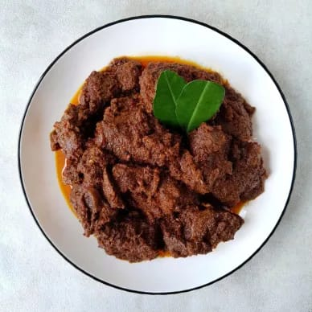
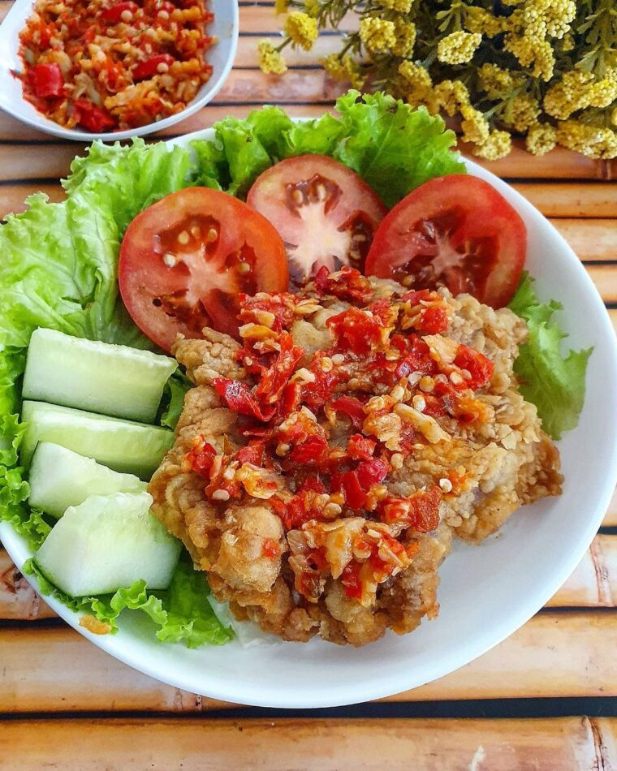
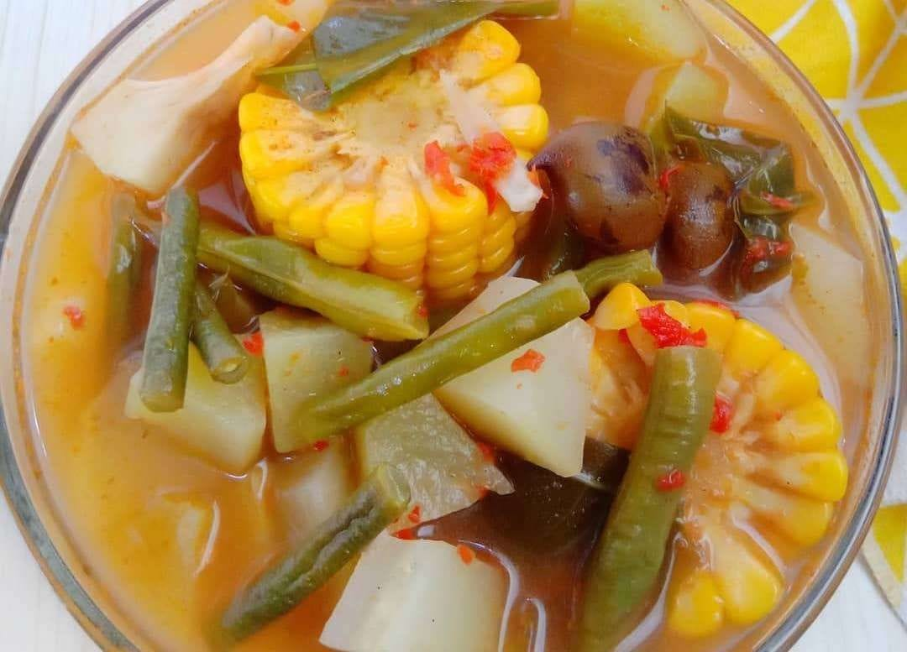
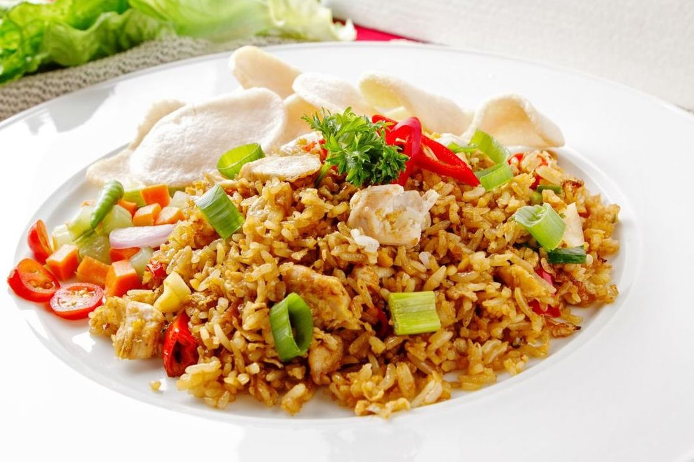
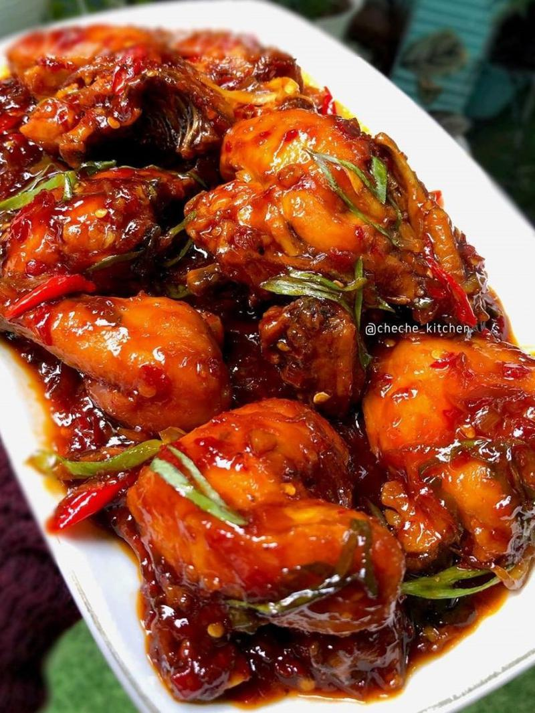
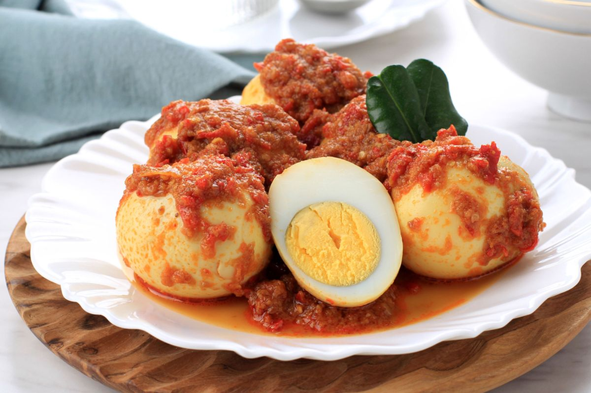
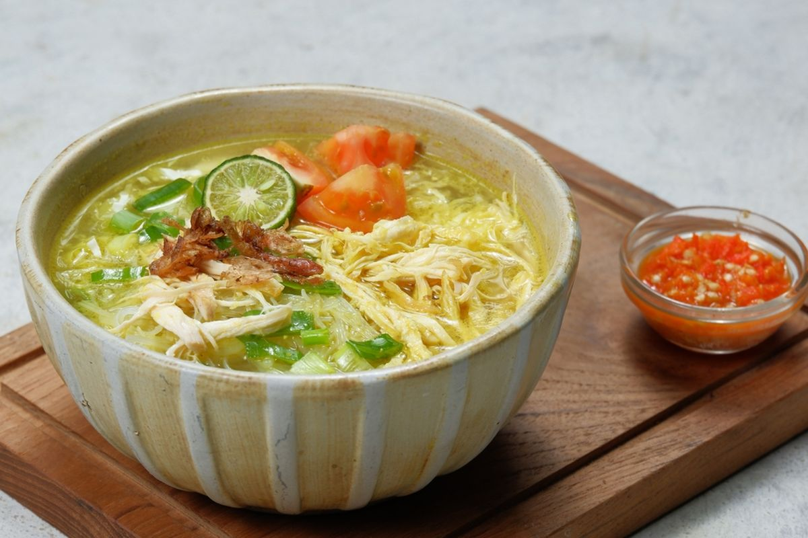

Bahan: daging sapi, santan, serai, daun jeruk, cabai, bawang...
Cara Masak: Tumis bumbu, masukkan daging, tuang santan, masak hingga empuk dan mengering.

Bahan: ayam, tepung kriuk, cabai rawit, bawang putih...
Cara Masak: Goreng ayam tepung, ulek sambal, geprek ayam bersama sambal.

Bahan: kacang panjang, labu, jagung, asem, cabai...
Cara Masak: Rebus bahan, masukkan bumbu halus dan asem.
Bahan: mie, kecap manis, kol, ayam suwir, bawang...
Cara Masak: Tumis bumbu, masukkan mie dan kecap, aduk rata.

Bahan: nasi, kecap, telur, ayam, bawang putih...
Cara Masak: Tumis bumbu, masukkan telur, nasi, dan kecap.

Bahan: ayam, kecap manis, bawang bombay...
Cara Masak: Tumis bawang, masukkan ayam, tambahkan kecap dan air.

Bahan: telur rebus, cabai, bawang merah...
Cara Masak: Goreng telur, siram dengan sambal balado.

Bahan: ayam, bihun, sereh, kunyit, bawang...
Cara Masak: Rebus ayam, tumis bumbu, campur, sajikan dengan bihun.
Perubahan di branch fitur-baru
2026 Pamulang
perubahan untuk pr